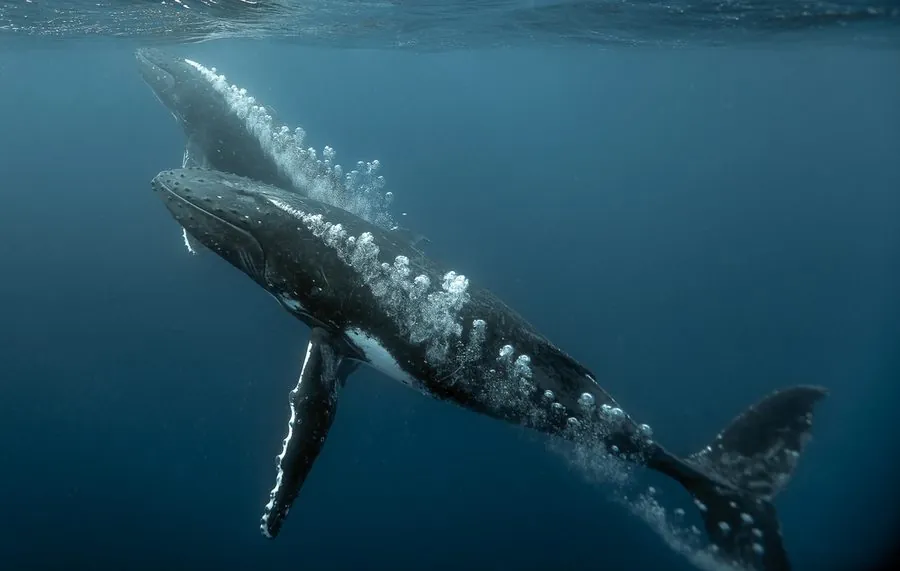

哺乳动物 · 动物界
座头鲸 Megaptera novaeangliae

以超长的胸鳍、跃身击浪与复杂歌声闻名的须鲸，每年在极地觅食场与热带繁殖场之间完成长距离迁徙。
- 分类
- 门脊索动物门纲哺乳纲目偶蹄目科须鲸科属座头鲸属
- 栖息环境
- 极地至热带的大洋，繁殖期进入温暖浅海，觅食期在寒冷高纬海域
- 地理分布
- 全球各大洋，南极、北太平洋与北大西洋种群较多
- 保护级别
- IUCN 无危（LC）；CITES 附录Ⅰ
物种志
座头鲸体长 12–16 米，体重 25–30 吨，雌性略大。它的胸鳍极长，可达体长的三分之一，前缘有结节状突起；背部隆起并有一个很小的背鳍，尾鳍宽大，腹面有黑白花纹，每头个体的尾纹都不同，可用于识别。
座头鲸分布于全球各大洋，分为南北半球的多个种群。它们夏季在极地富营养水域大量摄食磷虾和小鱼，冬季迁徙到热带、亚热带浅海繁殖，单程可达数千公里。座头鲸以“气泡网”协作捕鱼：几头鲸在鱼群下方绕圈吐气，形成气泡幕把鱼群集中，再张口冲上去吞食。雄性座头鲸会唱出长达半小时、结构复杂的歌曲，且曲目随时间变化，被认为是求偶与交流的方式。雌鲸妊娠期约 11–12 个月，每胎 1 仔。商业捕鲸停止后，多数种群正在恢复。
形态与习性
- 食性磷虾与小群鱼类，用气泡网协作捕食
- 体长12–16 m
- 体重25–30 t
- 寿命约 45–80 年
- 繁殖妊娠期约 11–12 个月，每胎 1 仔
- 迁徙单程可达数千公里
- 胸鳍长达体长的三分之一，前缘有结节
趣味知识
- 座头鲸的胸鳍可达体长的三分之一，是鲸类中最长的。
- 雄性座头鲸会唱结构复杂的歌曲，曲目还会随时间逐年变化。
- 它们用气泡网围住鱼群，再张口从下方冲上去吞食。
- 每头座头鲸的尾鳍腹面花纹都不同，像天然的身份证明。